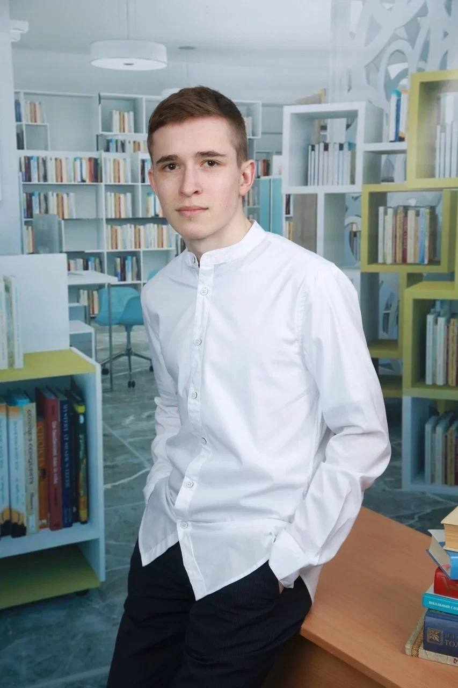

На главную
Информация
Интересные факты

О разработчике сайта
Разработал: Кочкин Тарас Сергеевич, ученик 11 класса
Учебное заведение: МОУ СОШ №27 г.Петрозаводск
Я решил сделать сайт именно на эту тему, так как Роберт Дауни-младший - мой любимый актер.